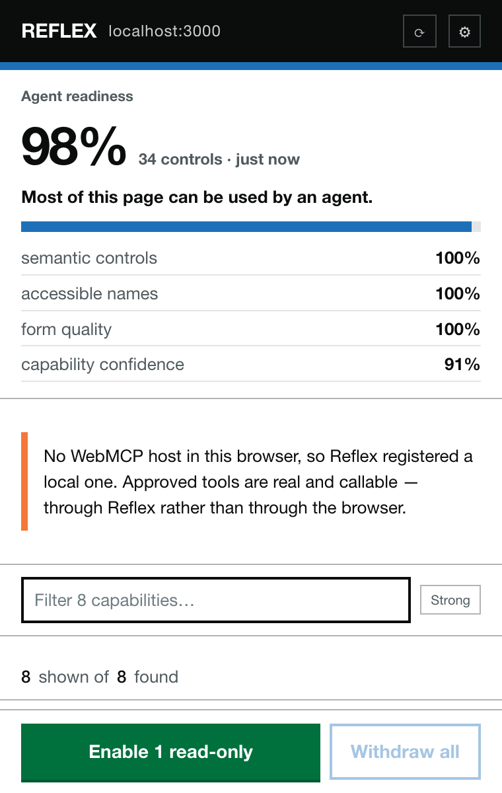
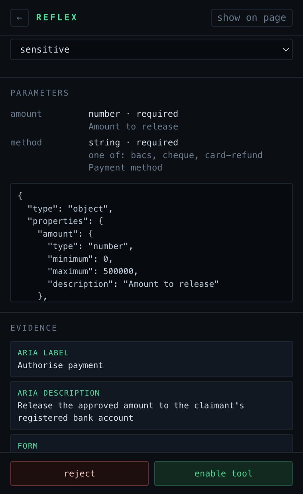
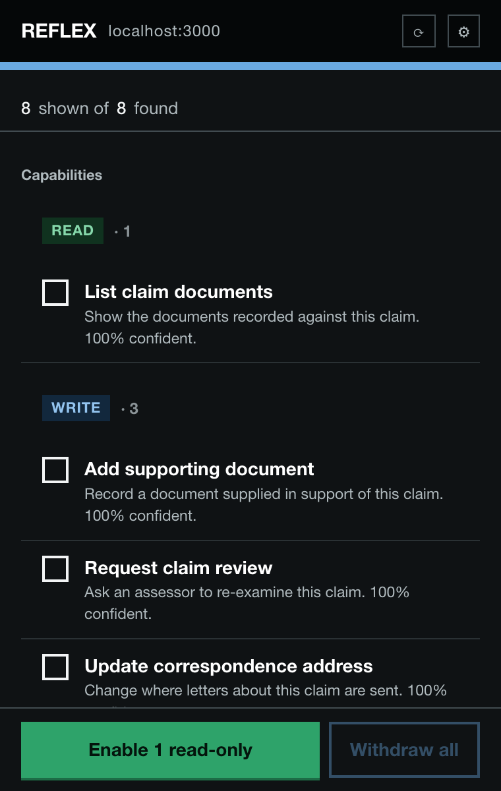
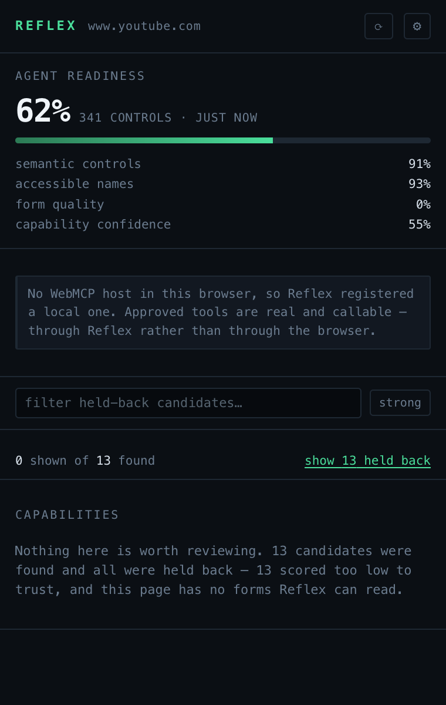
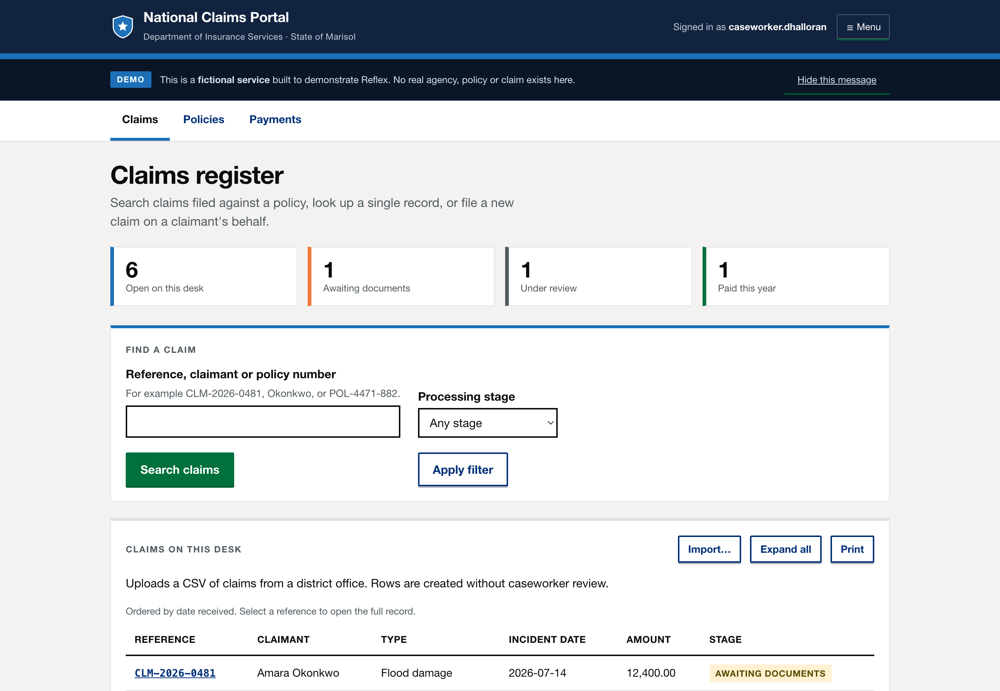

Chrome extension · WebMCP · experimental
Agentify the web you already use.
Most websites were built before WebMCP, and adapting each one by hand is why agents are still stuck clicking pixels. But those sites are not silent about what they do — they describe it already, in forms, semantic HTML and the accessibility metadata they had to add anyway. Reflex reads that, proposes tools, and registers the ones a human approves.
Accessibility metadata is already a capability contract
A form that names itself, describes itself and labels its fields has said everything a tool definition needs. Reflex does not guess from a screenshot; it reads the declaration the page already made, and records the exact attributes it used as evidence.
<form aria-label="Search claims" aria-description="Find a claim by reference number, claimant name or policy number"> <label for="q">Reference, claimant or policy</label> <span id="hint">For example CLM-2026-0481</span> <input id="q" name="query" required maxlength="60" aria-describedby="hint"> <button type="submit">Search claims</button> </form>
{
"name": "search_claims",
"description": "Find a claim by reference
number, claimant name or policy number.",
"inputSchema": {
"type": "object",
"properties": {
"query": {
"type": "string",
"maxLength": 60,
"description": "For example CLM-2026-0481"
}
},
"required": ["query"]
},
"risk": "read",
"confidence": 100
}
Calling it sets the field, dispatches input and change so frameworks
notice, submits with requestSubmit() so the page's own validation runs, and
returns the text of the region the form updated — so a read-only tool returns data, not
"submitted".
Discover, review, approve, then hand it to an agent

Discovered capabilities, grouped read → destructive

The evidence behind one generated tool

Light and dark, following your system
It works on sites nobody built for it
Measured with the project's own scanner, which runs the real discovery engine against a live page. Public services score highest — they are form-heavy and their accessibility metadata is genuinely excellent, because it was mandated.
| Site | Readiness | What Reflex found |
|---|---|---|
| GOV.UK search | 95% | site_wide(keywords) plus a 10-parameter filter form |
| NHS pharmacy finder | 90% | find_a_pharmacy(Location) |
| Companies House | 89% | search_the_register(q) |
| Wikipedia | 82% | A search form named from its id — worth renaming before use |
| GitHub advanced search | 72% | One form yielding 25 typed parameters |
| Hacker News | 50% | Nothing — 227 controls, forms without accessible names |
The top three were verified end to end: approve the tool, call it through
navigator.modelContext, and the site performs the real search. Their
Content-Security-Policy is no obstacle — Chrome injects the runtime through a privileged path
rather than a script tag.
Discovery is the easy half. Review is the product.
One YouTube watch page yields 57 candidates, every one scoring 55%, named
1_reply, 150_replies, 166_replies — the button on every
comment. A list that long is not a review queue, it is a wall, and a wall is worth what an
empty panel is worth.
A flat confidence floor is the wrong instrument, because real working capabilities on well-built government forms also score 50–60%. What separates them from noise is the source: a form arrives with a typed schema, which is evidence in itself; a button is an unparameterised action inferred from two words of label. So forms are held to 50% and buttons to 70%, labels that begin with a number are treated as tallies rather than actions, indistinguishable duplicates collapse into one row — and nothing is discarded, only held one click away with the reason it was held.

The honest answer, instead of thirteen rows of noise
A human stays between the agent and the account
activeTab, scripting, storage, and no host permissions unless you grant one site individually.Try it in five minutes
Install the extension
- Download the zip from the latest release and unzip it
- Open
chrome://extensionsand turn on Developer mode - Click Load unpacked and select the
reflex-extensionfolder - Open any page with forms and click the Reflex button
Or run the demo service
A fictional government claims portal is included — standard HTML, good ARIA, no Reflex hooks.
git clone https://github.com/biratdatta/reflex
cd reflex && npm install
npm run build:extension
npm run dev:demo
WebMCP is experimental and not in stable Chrome. Reflex probes both known host surfaces and, finding neither, installs a clearly-marked local one — so approved tools are real and callable either way. When a browser ships a native host, the adapter uses it and nothing else changes.